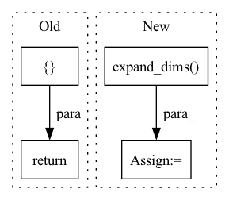

Pattern ID :41832

Before Change
photon_count = np.random.randint(800, 4000, num_emitters)
emit = []
cont = []
for i in range(num_emitters):
if np.any(positions[i, :2] < 0) or np.any(positions[i, :2] > img_size[0]):
cont.append(Emitter(positions[i, :], np.array([photon_count[i]]), np.array([start_frame[i]]), True))
else:
emit.append(Emitter(positions[i, :], np.array([photon_count[i]]), np.array([start_frame[i]])))
return emit, cont
if __name__ == "__main__":
After Change
start_frame = np.random.randint(0, frames, (num_emitters, 1)) // start on state is distributed uniformly
lifetime_per_emitter = 1
emit_id = np.expand_dims(np.mgrid[0:num_emitters], 1)
else: // prototype
raise NotImplementedError
num_emitters = np.round(emitter_per_frame * frames / lifetime) // roughly
In pattern: SUPERPATTERN
Frequency: 4
Non-data size: 4
Instances
Fragment ID: 117239580
Project Name: turagalab/decode
Commit Name: d44a397fde84e5b61edf94a145c72930f30171fa
Time: 2018-12-20
Author: gitdev@LRM.photo
File Name: simulator.py
M Class Name: AnonimousClass
N Class Name: AnonimousClass
M Method Name: random_emitters(5)
N Method Name: random_emitters(5)
M Parent Class:
N Parent Class:
M File Name: simulator.py
N File Name: simulator.py
M Start Line: 192
M End Line: 215
N Start Line: 186
N End Line: 210
'>
Before Change
time2 = 0
times = np.array([time1, time2]).reshape(1, 2)
T_21 = self.get_groundtruth_odometry(time1, self.data_dir + seq + "/applanix/radar_poses.csv")
return {"data": data, "T_21": T_21, "times": times, "mask": mask}
def get_dataloaders_boreas(config):
Retrieves train, validation, and test data loaders.
vconfig = dict(config)
After Change
time2 = 0
times = np.array([time1, time2]).reshape(1, 2)
T_21 = self.get_groundtruth_odometry(time1, self.data_dir + seq + "/applanix/radar_poses.csv")
azimuths = np.expand_dims(azimuths, axis=0)
timestamps = np.expand_dims(timestamps, axis=0)
return {"data": data, "T_21": T_21, "times": times, "mask": mask,
"azimuths": azimuths, "timestamps": timestamps}
'>
Fragment ID: 117239581
Project Name: utiasasrl/hero_radar_odometry
Commit Name: c67292c5ef38e1b66af9c3ab980330409a8deb5b
Time: 2021-04-29
Author: keenburn2004@gmail.com
File Name: datasets/boreas.py
M Class Name: BoreasDataset
N Class Name: BoreasDataset
M Method Name: __getitem__(2)
N Method Name: __getitem__(2)
M Parent Class: OxfordDataset
N Parent Class: OxfordDataset
M File Name: datasets/boreas.py
N File Name: datasets/boreas.py
M Start Line: 133
M End Line: 146
N Start Line: 133
N End Line: 149
'>
Before Change
time2 = 0
times = np.array([time1, time2]).reshape(1, 2)
T_21 = self.get_groundtruth_odometry(time1, self.data_dir + seq + "/gt/radar_odometry.csv")
return {"data": data, "T_21": T_21, "times": times, "mask": mask}
def get_dataloaders(config):
Retrieves train, validation, and test data loaders.
vconfig = dict(config)
After Change
times = np.array([time1, time2]).reshape(1, 2)
T_21 = self.get_groundtruth_odometry(time1, self.data_dir + seq + "/gt/radar_odometry.csv")
polar = np.expand_dims(polar, axis=0)
azimuths = np.expand_dims(azimuths, axis=0)
return {"data": data, "T_21": T_21, "times": times, "mask": mask, "polar": polar, "azimuths": azimuths}
def get_dataloaders(config):
Retrieves train, validation, and test data loaders.
'>
Fragment ID: 117239583
Project Name: utiasasrl/hero_radar_odometry
Commit Name: 69b518ec294c236dc4305129ec07282c5d2e007c
Time: 2021-03-04
Author: keenburn2004@gmail.com
File Name: datasets/oxford.py
M Class Name: OxfordDataset
N Class Name: OxfordDataset
M Method Name: __getitem__(2)
N Method Name: __getitem__(2)
M Parent Class: Dataset
N Parent Class: Dataset
M File Name: datasets/oxford.py
N File Name: datasets/oxford.py
M Start Line: 113
M End Line: 127
N Start Line: 113
N End Line: 129
'>
Before Change
T_21 = self.get_groundtruth_odometry(time1, self.data_dir + seq + "/gt/radar_odometry.csv")
polar = np.expand_dims(polar, axis=0)
azimuths = np.expand_dims(azimuths, axis=0)
return {"data": data, "T_21": T_21, "times": times, "mask": mask, "polar": polar, "azimuths": azimuths}
def get_dataloaders(config):
Retrieves train, validation, and test data loaders.
vconfig = dict(config)
After Change
T_21 = self.get_groundtruth_odometry(time1, self.data_dir + seq + "/gt/radar_odometry.csv")
polar = np.expand_dims(polar, axis=0)
azimuths = np.expand_dims(azimuths, axis=0)
timestamps = np.expand_dims(timestamps, axis=0)
return {"data": data, "T_21": T_21, "times": times, "mask": mask, "polar": polar, "azimuths": azimuths,
"timestamps": timestamps}
def get_dataloaders(config):
'>
Fragment ID: 117239584
Project Name: utiasasrl/hero_radar_odometry
Commit Name: 17f07b8ec8a64d077e8162c6846f1b7a233abe62
Time: 2021-03-13
Author: keenburn2004@gmail.com
File Name: datasets/oxford.py
M Class Name: OxfordDataset
N Class Name: OxfordDataset
M Method Name: __getitem__(2)
N Method Name: __getitem__(2)
M Parent Class: Dataset
N Parent Class: Dataset
M File Name: datasets/oxford.py
N File Name: datasets/oxford.py
M Start Line: 113
M End Line: 130
N Start Line: 113
N End Line: 132